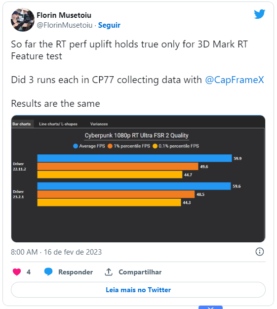

GPUs AMD Radeon RX 6000 tiveram aumento de desempenho em ray tracing com novo driver
Mas somente em benchmark sintético
Por Raphael Giannoti
1.webp)
Depois de cerca de dois meses sem novos drivers da AMD para as GPUs Radeon RX 6000, a empresa lançou a versão Adrenalin 23.2.1 nesta semana trazendo melhoria de desempenho para jogos. Porém essas melhorias foram além: usuários de GPUs RDNA 2 têm relatado aumento de até 40% no desempenho em ray tracing nas aplicações do 3DMark.
Um teste publicado por Florin Musetoiu no Twitter mostra que sua AMD Radeon RX 6800 XT teve um aumento de 10 FPS no teste de ray tracing do 3D Mark, saindo de 26,20 FPS para 36,20 FPS, um aumento de 38,2% entre o driver anterior e o atual da AMD.
O mesmo ganho de performance, no entanto, não parece acontecer em jogos. Florin Musetoiu publicou as médias que conseguiu rodando Cyberpunk 2077 com ray tracing e a irrisória diferença está dentro da margem de erro.
 Voltar para a página de notícias